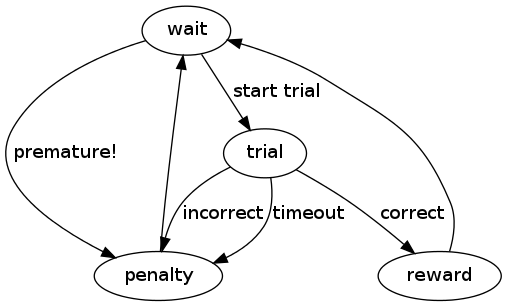

All tasks boil down to a finite state machine (FSM), a set of states and the rules for moving between those states. Every task is a subclass of the Experiment class. Parameters can be either hard-coded or defined at runtime (e.g., to adjust the difficulty of the task without needing to change the code).
Specifying the finite state machine (FSM)
A state can be thought of as a discrete part of the task which is triggered by some condition being met and ends when some other condition is met (e.g., waiting for fixation, or a target hold). The state transition definition describes the structure of the task. For each possible state it lists all the possible subsequent states and the events that trigger those transitions.
For example, the parent class Experiment has the following structure, where ovals represent states and arrows represent transitions:
A state transition definition is written in the code as a nested dictionary with the name status that delineates all possible event-next state transitions that could occur from within each state. It is usually the very first thing defined in a task class. For the task illustrated above, the state transition definition in the code looks like:
status = dict(
wait = dict(start_trial="trial", premature="penalty", stop=None),
trial = dict(correct="reward", incorrect="penalty", timeout="penalty"),
reward = dict(post_reward="wait"),
penalty = dict(post_penalty="wait"),
)
Alternatively, a slightly more abstracted declaration might be:
from riglib.experiment import FSMTable, StateTransitions
status = FSMTable(
wait = StateTransitions(start_trial="trial", premature="penalty", stoppable=False),
trial = StateTransitions(correct="reward", incorrect="penalty", timeout="penalty"),
reward = StateTransitions(post_reward="wait"),
penalty = StateTransitions(post_penalty="wait"),
)
There are four states in this task (wait, trial, reward, and penalty). Each state name is entered in the status dictionary as a key with another dictionary for the value. That dictionary in turn contains keys which are the names of events that trigger state transitions (they can also be thought of as tests that must be passed in order to move to the next state), and values which are the names of the states that follow these events. So while this task is in the wait state, it can do one of four things at any moment: if the start_trial test is passed, it transitions to the trial state; if the premature test is passed, it transitions to the penalty state; if the experiment receives a stop signal from the server, the task ends; if none of these things occur, it remains in the wait state.
Note
The key/value pair stop = None can be inserted into any state where you would like the server to be able to stop the task immediately. If a state’s dictionary does not contain this entry and a stop command is received, the task will continue until it reaches a state that does contain it. Make sure at least one state has an exit transition, otherwise you will not be able to stop execution of your task! If you use the StateTransitions, states are assumed to be stoppable by default (the more common condition). Sometimes states should not be stoppable, e.g., if during that state you run an actuator and you need to keep the task running until the action is complete.
Runtime-configurable parameters
Parameters which you want to be set by the experimenter at runtime can be defined as Traits within the task class definition:
# settable traits
reward_time = traits.Float(.5, desc="Length of juice reward")
The first argument is the default value for the trait and the second is a docstring that will show up when the mouse hovers over that parameter in the browser interface. The name of the variable will be the text the user sees in the list of parameters (in this case reward_time). Several different traits types are currently supported:
These show up as text entry fields, or multiple text-entry fields for Tuple/Array
These will show up as checkboxes
traits.Instance-type traits are used for selecting the Decoder, for example. They are useful when the datatype of the thing you want to select is represented by some custom class and you want to be able to select directly from a list of objects. In the current implementation, the object type (e.g., riglib.bmi.Decoder) must correspond to a database model (e.g., models.Decoder). A drop-down list in the GUI is populated with recently created models.Decoder instances. This association is made through db.namelist.instance_to_model. When data from the GUI is submitted back to the server, the object corresponding to the database record is retreived (db.json_param.norm_trait).
Enum traits provide an alternative way to Instance traits to create a drop-down menu of options on the web interface. If you wish to add an Enum attribute ATTR to a task, you must also specify ATTR_options as a list of string options to select from. This is due to a deficiency in the way traits.Enum objects are created in the version of traits currently being used; there appears to be no way to extract the possible traits from the Enum object.
Note
This trait type still works, but is no longer the best way to achieve the same functionality
OptionsList traits are custom traits for this library, which serve the same function as Enum traits but without the circuswork of the need to declare the set of options in another variable. An example:
plant_type = traits.OptionsList(*plantlist, desc='', bmi3d_input_options=plantlist.keys())
in which another kwarg, bmi3d_input_options should be an iterable object which contains the available options
DataFile traits are similar to Instance traits, but they’re an upgrade to the Instance traits since you do not have to dig into namelist.py or db/tracker/models.py in order for the list to be populated properly. To make a DataFile trait
all data files must be associated with a system. So make a new system, e.g., the 'misc' system:
from db.tracker import models data_sys = models.System.make_new_sys('misc')if the system already exists, then the code above will not do anything, so you can safely always try to make the new system
Save the object to a pickle file in the appropriate location, and create a DataFile object to keep track of the file location:
data_sys.save_to_file(self, obj, filename, obj_name=None, entry_id=-1)Add a “DataFile” trait to the task. An example might be:
test_file = traits.DataFile(object, desc='test', bmi3d_query_kwargs=dict(system__name='misc'))The keyword argument bmi3d_query_kwargs contains any Django filter criteria you’d like to apply to filter out irrelevant options. In this case, the datafiles presented to the user in the browser will only be associated with the system ‘misc’
Making a new type of trait [This section is still incomplete]
These things need consideration if you’re making a new type of trait
riglib.experiment.__init__ db.tracker.models.Task.to_json() parse_traits.js db.json_param.norm_trait # if necessary
There’s a little bit more to instantiating a task object tha normally required with a python object. For instances of riglib.experiment.Experiment, there are three different initialization methods which must all be executed
Jobs to do before creating the task object go here (or this method should be overridden in child classes). Examples might include sending a trigger to start a recording device (e.g., neural system), since you might want recording to be guaranteed to start before any task event loop activity occurs.
Constructor for Experiment. This is the standard python object constructor
| Parameters: | kwargs: optional keyword-arguments :
|
|---|---|
| Returns: | Experiment instance : |
Initialization method to run after object construction (see self.start). This may be necessary in some cases where features are used with multiple inheritance to extend tasks (this is the standard way of creating custom base experiment + features classes through the browser interface). With multiple inheritance, it’s difficult/annoying to make guarantees about the order of operations for each of the individual __init__ functions from each of the parents. Instead, this function runs after all the __init__ functions have finished running if any subsequent initialization is necessary before the main event loop can execute properly. Examples include initialization of the decoder state/parameters.
If no initialization steps are necessary for the task, the __init__ method can be omitted (because it will automatically inherit the parent __init__ method). This is true of the other special methods as well; however, if an __init__ method is included, it MUST contain a call to the parent method, whereas the rest of the special methods may be written to replace the parent methods if desired.
_start_
_start_ methods specify actions to be performed once at the onset of a new state:
In the above example, every time the task enters the wait state, the origin target’s color changes and the target is hidden from the screen, in addition to whatever actions are already performed by the parent class’ _start_wait method.
The full name of the method should always be the _start_ prefix followed by a state name that appears in the state transition definition, and the method should take self as its sole argument. (These two rules apply to _while_ and _end_ methods as well.)
_while_
_while_ methods specify actions to be repeated (usually once per frame) while the task is in a state. Here, the cursor position is being constantly updated during the wait state:
def _while_wait(self):
self.update_cursor()
_end_
_end_ methods specify actions to be performed once at the end of a state, just before the task transitions to the next state. In this example, the origin target changes color once a target hold is complete:
def _end_origin_hold(self):
#change target color
self.origin_target.color = (0,1,0,0.5)
_test_
_test_ methods define the criteria for state transitions. They are called constantly in the background during corresponding states, and must always return a boolean value. When a _test_ method returns True, a transition to the state specified in the state transition definition is triggered. _test_ methods must be named with the prefix _test_ followed by one of the event names listed in the state transition definition, and they always have two arguments: self and ts, which is a variable containing the elapsed time in seconds since the onset of the current state. The following _test_ method returns True when the elapsed time in the current state (origin_hold) exceeds the constant value origin_hold_time:
def _test_hold(self, ts):
return ts>=self.origin_hold_time
_cycle
Code that needs to run every task loop iteration goes here
Two types of data saving are currently supported: 1) Saving a variable which could change on every clock tick of the FSM 2) Saving a static variable
Variables you wish to save every FSM iteration must be declared prior to starting the task. The base experiment class has an attribute ‘dtype’, and each new variable to save must be added to this list using the experiment.Experiment.add_dtype method.
To actually save the variable (suppose your variable is named ‘data’), sometime during the execution of the ‘_cycle’ method of your task, you must do
self.task_data['data'] = data_value
Important note: in child classes, you must do this before calling the super _cycle method to ensure that your data is saved properly. This is because the final _cycle in the method resolution order is the experiment.Experiment._cycle method, which will send your task_data to any registered sinks. So if you do not set the variable beforehand, it may appear as the data you have saved to file is off by one timestep.
Similar to the higher than normal complexity of instantiating a task object, there are a couple of methods which also need to execute if you want your task data to be saved properly
Commands to execute at the end of a task.
| Parameters: | database : object
saveid : int
kwargs : optional dict arguments
|
|---|---|
| Returns: | None : |
Method for adding data to hdf file after hdf sink is closed by system at end of task. The HDF file is re-opened and any extra task data kept in RAM is written
The base experiment class is a barebones FSM implementation. Two useful extensions are the LogExperiment and the Sequence classes. The LogExperiment extends Experiment by keeping track of (i.e., logging) events and state transitions. This provides the ability to calculate stats about state occurrences (e.g., successes per minute) as well as save the log to the database during “cleanup” time.
The Sequence class further extends LogExperiment by making the “wait” state a special state. The constructor for the Sequence class expects a generator to be provided at construction time. During the wait state, an element is pulled from the generator. This element can be anything (an array, an object, etc.). This provides a way to specify the goal of each trial (e.g., the direction in which to reach) in a somewhat generic way. Nearly every task, to date, inherits from Sequence and leverages this functionality.
In order to properly utilize Sequence functionality, a generator must be provided. The typical procedure involves a generation of a list of trial goals, which are yielded by a generator one at a time. These generator functions are naturally specific to each task. A reaching task may require specification of where to place all the targets. A grasping task may also specify targets, but perhaps in a different coordinate system or with more information necessary (e.g., the type of object to present).
Each task should specify the possible sequence generators in the class attribute sequence_generators, which must be specified for each task which inherits from Sequence. The list is empty by default and should be populated with the string names of functions to be used as sequence generators. Function names are assumed to be static methods of that same task class. An example:
from riglib.experiment import Sequence
class NewSequenceTask(Sequence):
sequence_generators = ['seq1', 'seq2']
@staticmethod
def seq1(length=10):
return [1]*length
@staticmethod
def seq2(length=10):
return [2]*length
# seq3 will not show up on the web interface because it is not in the list 'sequence_generators'!
@staticmethod
def seq3(length=10):
return [3]*length
The built-in python decorator @staticmethod will make the declared method a static method of the task.
Features are partial tasks which can be used to extend a “base” task using multiple inheritance. This functionality can be used to extend behavior for a particular state of the task (e.g., deliver a juice reward during the ‘reward’ state), create a “sink” to use for saving data to file (e.g., SaveHDF), etc.
Features should be added to the features module at the top-level of the bmi3d code. If the feature should also be selectable at runtime from the web interface, it should also be imported and added to featurelist.py. The dictionary ‘features’ contained within that file is used to populate the list of features selectable. Not every feature needs to be a selectable feature. Sometimes the functionality may be useful for factoring out common but requried code between different tasks.
Note
To keep cross-task code dependencies minimal, manage featurelist.py carefully. If you only populate it with features that you actively need, that will minimize interference from other features that you don’t need. Including a feature which you don’t actually need may cause unnecessary errors due to the import of code, even if you don’t actually use the features in question